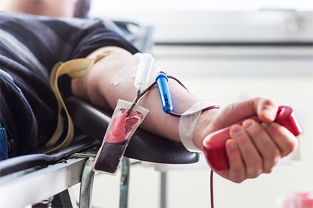

Ola Mostafa
 Blood is a bit like water," said Donald Doddridge, president of the American Association of Blood Banks, which represents about 2,370 independent centers in the United States. Though the raw material is, for the most part, free, "someone has to get it and purify it, which costs money," he explained. "Basically we're supplying a product and selling it."
The purpose of collecting and distributing blood is to use it and its constituent components to save lives. But the industry has increasingly come under attack, accused of violating Federal guidelines, thus adding to the spread of AIDS and hepatitis. In Congressional hearings last month, Federal officials charged that slipping safety standards, improper training of personnel, deteriorating equipment and the drive for revenues had imperiled the industry.
The American Red Cross, the nation's largest blood supplier, was singled out for criticism. In the past year, the Red Cross has also been cited by the Food and Drug Administration, which regulates the blood industry, for hundreds of violations of procedures. In contrast, only 10 percent of the independent blood centers were found to have similar violations.
No single license-holder for blood has had the problems of the Red Cross," said Dr. Gerald V. Quinnan Jr., acting dean of the Center for Biological Evaluation and Research at the F.D.A.
Responding to the criticism, Elizabeth Dole, the former Transportation Secretary who has been president of the Red Cross since February, argued that "the blood supply is safer than ever." But she added that the Red Cross will be making major changes in the way it conducts its blood-banking and processing business. The Players Giant Red Cross Has Image Problems
Though most blood bank officials do not like to compare their product to other commodities -- potatoes, say, or oil -- there are some similarities. In contracting to supply domestic hospitals, blood banks operate in a very competitive market. Then too, like oil, blood can be refined into a variety of higher-priced products with market values fluctuating widely depending on world supply and demand.
Since the 1960's, the banks have been separating blood into its components -- red cells, platelets and plasma -- in addition to selling it whole. This conserves and specializes the blood supply, as well as bringing in greater revenues. But industry officials acknowledge that breaking blood down into a variety of components increases the possibility of infection, since a single patient may get components from a variety of donors.
Three nonprofit organizations dominate the $2 billion American market for whole blood. The industry leader is the Red Cross, which was founded by Clara Barton after the Civil War. Its 53 regional blood centers collect more than half of the nation's blood supply, or 6.5 million units a year. The Red Cross's blood services division last year had $741 million in revenues and $14 million in tax-exempt "profits," meaning excesses of revenues over expenses. Total revenues raised for its relief services were about $945 million last year.
The Red Cross's main rival is the American Association of Blood Banks, which includes members of the Council of Community Blood Centers as well as hospital blood centers. The association, founded in 1947 primarily to counteract the dominance of the Red Cross, acts sets uniform operational guidelines for its independent members.
Community blood banks, which are not-for-profit organizations, operate like small businesses with a board of directors and president. Mr. Doddridge, head of a community center in St. Petersberg, Fla., as well as current president of the association, estimates that most independently licensed centers have revenues of $50,000 to $500,000 and retain 5 percent to 10 percent of revenues in not-for-profit excesses.
"You can't operate a blood bank in the red," Mr. Doddridge said. "Whatever profit margin you have is put back into the business. That's why we stress that we are a service, collecting blood for the nation."
In contrast to independent centers, which each have their own license from the F.D.A, the Red Cross has only one license.
The Red Cross's venerable image, as well as its single license, was seriously threatened in 1988, when the agency closed its Washington blood center after it was discovered that 235 people who had received blood there tested positive for the AIDS virus.
Mrs. Dole announced last month that under the new restructuring plan, all of its blood centers will be closed on a rotating basis over the next two years to insure that computer inventories and screening systems are uniform nationwide and that Federal regulations are being met. The restructuring effort is expected to cost $125 million.